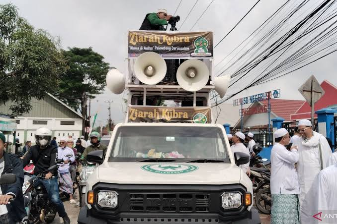

Tradisi Budaya dan Kepercayaan

Lomba Perahu Bidar di Sungai Musi
Lomba Perahu Bidar
Lomba perahu dayung tradisional di Sungai Musi yang diadakan untuk memeriahkan hari jadi Kota Palembang. Perahu panjang dengan banyak pendayung ini menjadi tontonan yang ramai dan melambangkan semangat kebersamaan masyarakat.

Tradisi Ziarah Kubro
Ziarah Kubro
Tradisi ziarah ke makam para ulama dan sultan Palembang yang dilakukan menjelang bulan Ramadan. Masyarakat berdoa dan mengenang jasa para tokoh yang menyebarkan Islam di Palembang.

Pakaian adat Aesan Gede
Pernikahan Adat Aesan Gede
Pengantin Palembang mengenakan pakaian adat Aesan Gede yang megah dengan warna merah dan emas serta kain songket. Pakaian ini melambangkan kemuliaan dan kejayaan Palembang pada masa kesultanan.
Filosofi dan Kepercayaan
Kehidupan masyarakat Palembang sangat dekat dengan Sungai Musi yang menjadi sumber kehidupan dan jalur perdagangan sejak masa Sriwijaya. Mayoritas masyarakat beragama Islam, dan tradisi Melayu Palembang berjalan berdampingan dengan kehidupan beragama. Di Palembang juga hidup masyarakat Tionghoa dan umat Buddha yang menjaga tradisinya, sehingga kota ini kaya akan keberagaman.
Nilai Budaya Palembang
Nilai seperti keramahan, kebersamaan, dan gotong royong tetap dijaga dalam kehidupan sehari-hari. Orang Palembang akrab menyebut diri mereka dengan sebutan wong kito, yang bermakna orang kita.
© 2026 Palembang Bumi Sriwijaya. Semua hak dilindungi.
Dibuat oleh Muhamad Guntur Ramadhan | Universitas Muhammadiyah Bengkulu